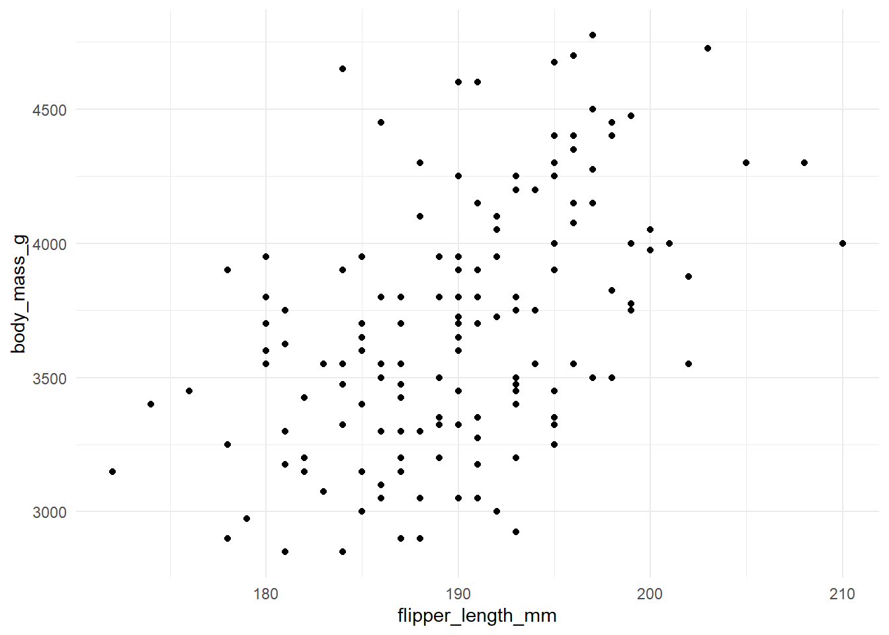

# A list of plots:
plot_list <- penguins |>
split(penguins$species) |>
lapply(\(x){
ggplot(x, aes(x = flipper_length_mm, y = body_mass_g)) +
geom_point() +
theme_minimal()
})
# Make some heading names:
headings <- names(plot_list)Example
Introduction
This template is designed to accompany the slide deck and to include most of the features you will need for hosting a collaborative research project. I’ve included a few extras that I find handy (e.g., YAML entries, and check out the plot loop!). Every research project needs to be taylored towards your preferred workflow, collaborators, data, data privacy, and the list goes on.
Some things are the same across projects like well commented code and a well documented version control history. I use documents like this (previously in Rmarkdown) to share results easily with a link hosted on GitHub.
This complete template has a structure that many projects roughly follow from intro inforation to colaborators through some data wrangling and visualisations.You can replace ths intro (and following sub-section) with a summary of your project and any useful links, references and content you desire.
A note on project structure
Today, we have cloned an existing project structure. It is important that you create a project structure that works for your particular case. A general framework is to create a primary directory that is your repo and contains your .qmd script, and sub directories for data, outputs.
/primary_directory
script.qmd
.git, .gitignore
/data
- data.csv
/outputs
- results
Plenty of tools exist for reproducibility (such as the renv package to record package versions used in your project).
Packages and libraries
It is good practice to include a list of packages used as well as any source files or functions up front. {.unlisted} will exclude the section from the table of contents. You can hide the section completely with {.unlisted .hidden}. This is useful for sections like ‘packages’ which are included in the code for reproducibility and are necessary to execute but maybe unnecessary to display. If your sections are numbered (insert number-sections: true in YAML) then you will need {.unlisted. unnumbered .hidden} to hide the section.
You might also include sourcing any function scripts (e.g., source("my_functions.R")).
Data wrangling
Typically you need to do some tidying of your data. Each project will have different reqirements e.g., transforming data or generating new datasets. You probably want to dedicate a section just for wrangling but may want to hide it from the output. See R for Data Science for more info. You may prefer to have seperate scripts in a dedicated /R directory for processing dta and generating outputs.
Visualisations
Sometimes I have a lot of plots (like, a lot!). Perhaps generated from a loop that outputs a list of related plots. It is possible to programatically generate panel tabsets rather that repeatedly writing out the heading # and inserting the plot (e.g., plot_list[[1]]). As an example, I’ve grabbed a couple of plots from Alison Horst again.
Plot tabs
The code might be a little complicated but useful to reduce the length and manual work if you have a lot of outputs.



To do
I sometimes keep a project to-do list here
Final remarks
This workshop is primarily designed to introduce you to tools and useful features in Quarto. Regardless of your workflow (which this template may not fit!), hopefully you will have the tools to make sharing results and colaborating with supervisors and researchers much easier.
Useful links
Biostats - very useful resource for authoring documents in Quarto.
Awsome Quarto - a big list of Quarto things.
References
References will appear here!